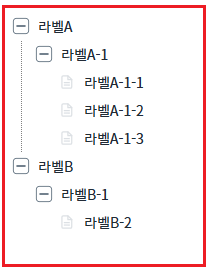
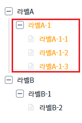

TreeView의 'setLabelStyle' 메소드를 사용하여 해당 노드의 label style을 변경하는 예제입니다.
노드 스타일 변경하기
1
STEP 1: 초기 상태를 확인합니다.
예제 영역 '노드 스타일 변경' 에서 TreeView가 구성되어 있고 모든 노드의 색상이 검정색인 것을 확인합니다.Image 1.브라우저(Chrome) 실행 예시

2
STEP 2: 버튼을 누릅니다.
'스타일 변경하기' 버튼을 클릭합니다.3
STEP 3: 실행된 결과를 확인합니다.
'라벨A-1' 밑의 노드는 전부 색상이 'orange'로 바뀌는 것을 확인합니다.
Image 2.브라우저(Chrome) 실행 예시

TreeView의 'setLabelStyle' 메소드를 사용하여 스크립트를 작성합니다.
Example 1.Script
scwin.btn_ex1_onclick = function (e) { // 2번째 노드의 색상을 orange로 바꿔줍니다. (해당 노드의 하위 노드도 전부 적용) trv2.setLabelStyle(2, "color", "orange", true); };
setLabelStyle( )